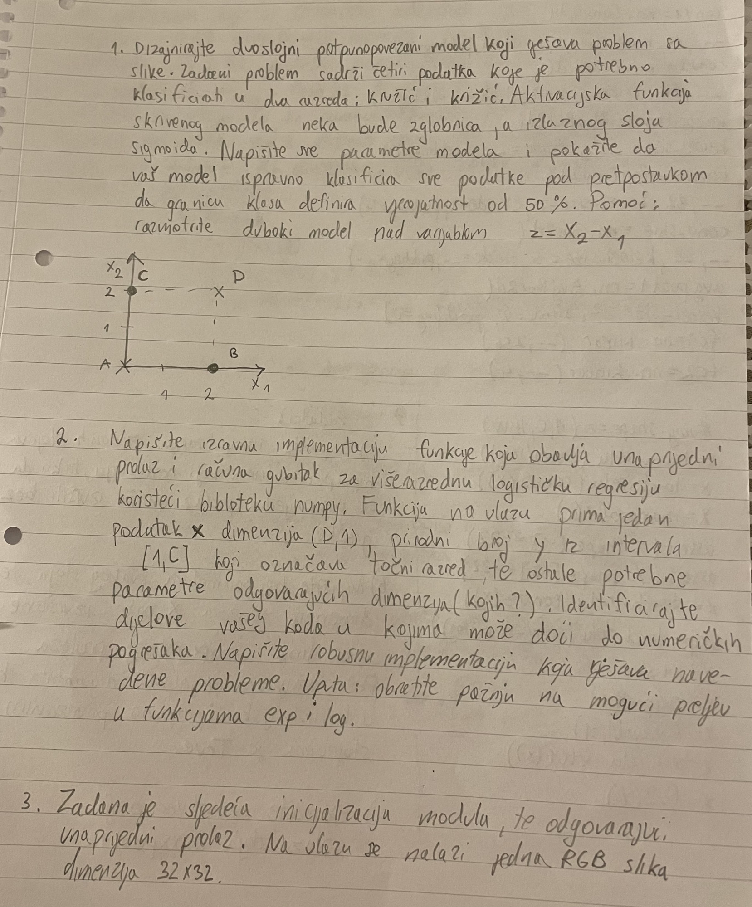
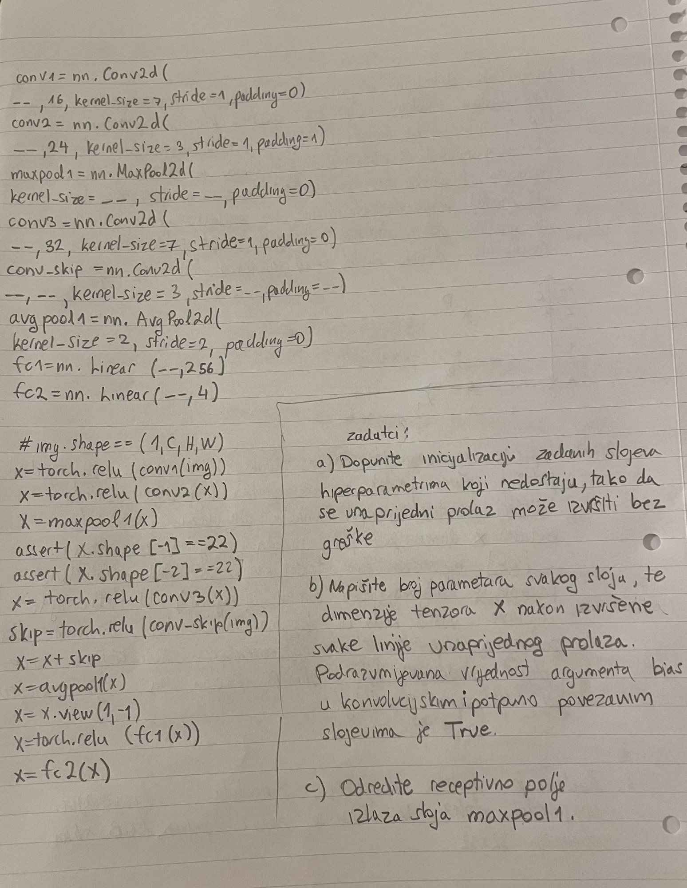
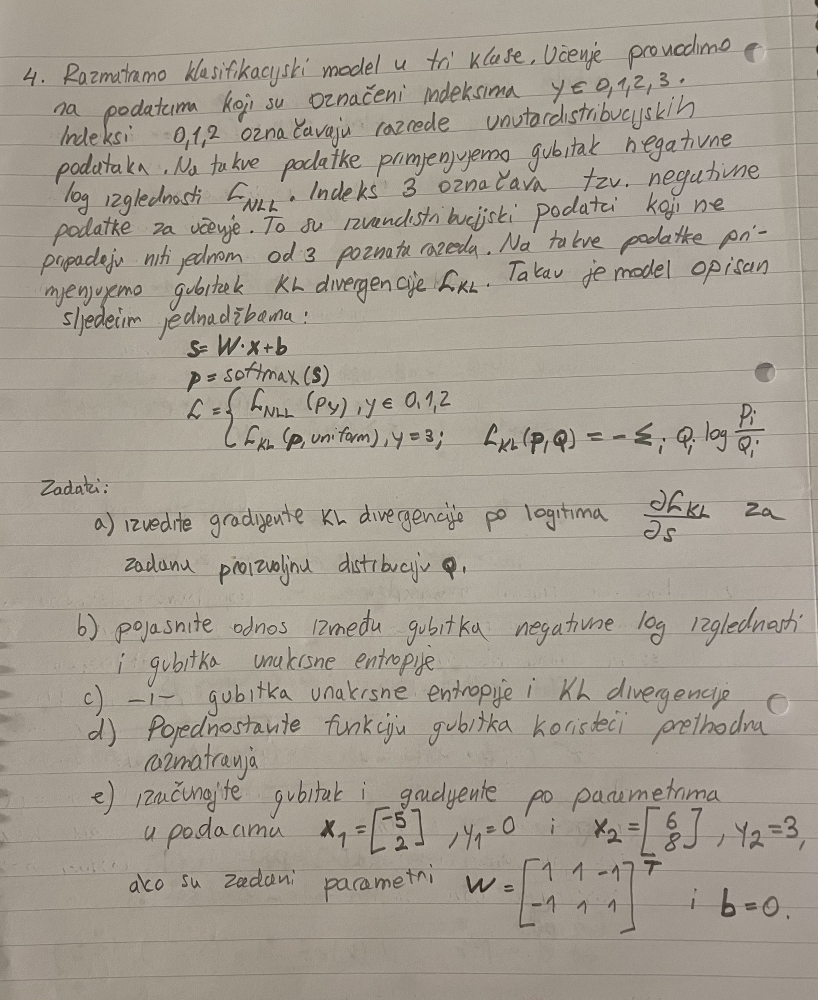
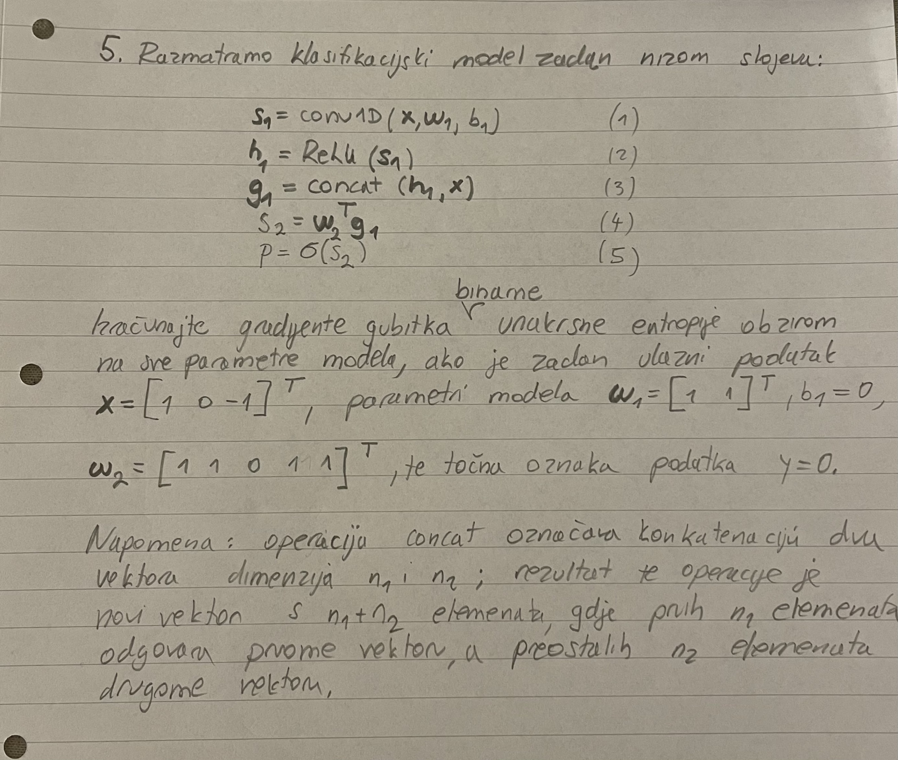

sheriffHorsey Jer nisi navea riječ “međuispit” u svojoj objavi lmao
Stigli bodovi woohoo
Kakvi su to rezultati 😂, na zadacima max 27/40
[obrisani korisnik] krivo piše, ispit ukupno nosi 40, teorija je 12 od toga, tako da je kolega sa 27 izdominirao….
_2D_ wth ipak se ne ispisujem s faksa
evo MI prepisan    
steker kaj ste vi glupi?
FERonja why
FERonja brate moj u Kristu, kolko drukčiji može bit zadatak s konvolucijom npr? ovak si samo širimo bazu zadataka koje možemo vježbat
steker takve stvari ne objavljuješ tu zato što će ispiti postati samo kreativniji.
Ako nisi znala postoje asistenti na ovom forumu.
FERonja Doslovno objavljuju ispite na stranicama predmeta, ovo je samo da ljudi imaju za rok jer tesko da ce uploadat tako brzo
Jokke želim reći da su se možda neki zadaci mogli ponoviti na roku, ali sada sam siguran da neće.
FERonja Zašto ne? Postoje šablonski zadaci koji se ponavljaju i oni kreativni koje nema boga da predvidiš.
@FERonja dobro je sve, broj dostupnih zadataka i sposobnost generalizacije su pozitivno korelirani